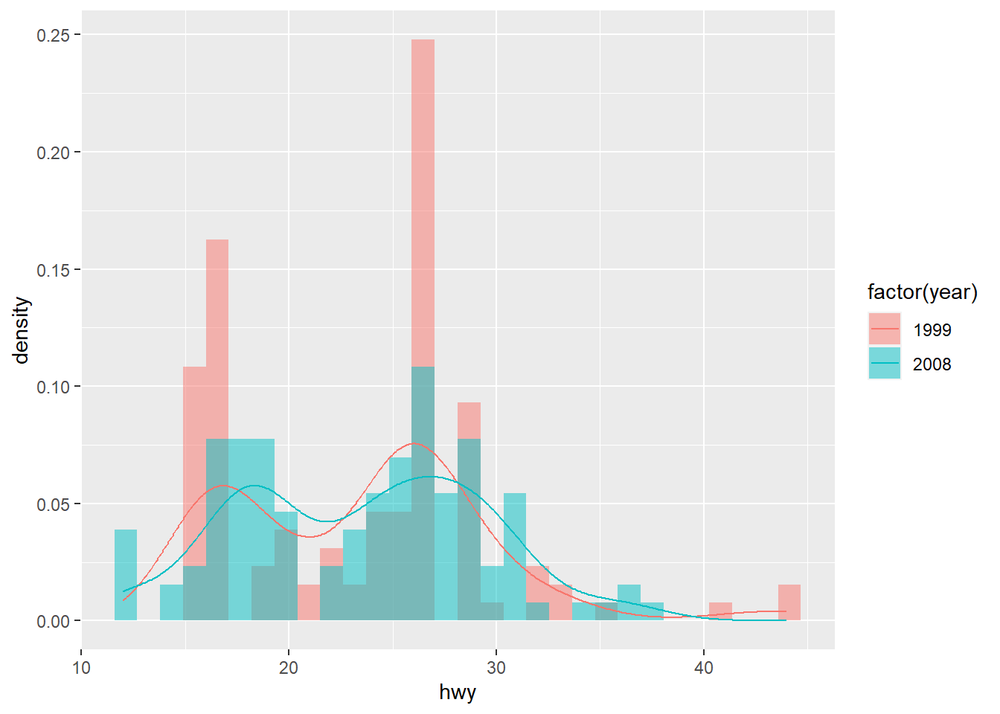

WEEK02
第二周：利用Rmarkdown制作简历，学习ggplot2
简历相关资料借鉴
| 一些简历资源 | 链接 |
|---|---|
| 简历学习模板1 | https://github.com/geekcompany/DeerResume |
| 简历学习模板2 | https://github.com/geekcompany/ResumeSample |
| 在线MarkDown简历书写工具 冷熊简历 | http://link.ftqq.com/0rsRL |
| 教学：《如何写好技术简历》 | http://link.ftqq.com/KWkVX |
| 简历例句 | https://github.com/resumejob/awesome-resume |
| 大厂高频面经面试题 | https://osjobs.net/topk/ |
| 雨果主题简历制作模板 | https://wowchemy.com/hugo-themes/ |
ggplot2绘图入门
导论
<基本概念>
图层（Layer）：图层可以允许用户一步步的构建图形，方便单独对图层进行修改、增加统计量、甚至改动数据。
标度（Scale）：标度是一种函数，它控制了数学空间到图形元素空间的映射。一组连续数据可以映射到X轴坐标，也可以映射到一组连续的渐变色彩。一组分类数据可以映射成为不同的形状，也可以映射成为不同的大小。
坐标系统（Coordinate）：坐标系统控制了图形的坐标轴并影响所有图形元素，最常用的是直角坐标轴，坐标轴可以进行变换以满足不同的需要，如对数、极坐标轴。
位面（Facet）：很多时候需要将数据按某种方法分组，分别进行绘图。位面就是控制分组绘图的方法和排列形式。
<一个例子>
用ggplot2包内带的汽车测试数据（mpg）来举个例子，用到的三个变量分别是发动机容量(displ)、高速公路上的每加仑行驶里数(hwy)、汽缸数目(cyl)。首先加载ggplot2包，然后用ggplot定义第一层即数据来源。其中aes参数非常关键，它将displ映射到X轴，将hwy映射到Y轴，将cyl变为分类数据后映射为不同的颜色。然后使用+号添加了两个新的图层，第二层是加上了散点，第三层是加上了loess平滑曲线。
install.packages("ggplot2")library(ggplot2)
p <- ggplot(data=mpg,aes(x=displ,y=hwy,colour=factor(cyl)))
p + geom_point() + geom_smooth()## `geom_smooth()` using method = 'loess' and formula 'y ~ x'如果需要对整体数据进行平滑，可将colour参数设置在散点图层内而非第一层，这样第三层的平滑图形就不会受到colour参数的影响。
p <- ggplot(mpg,aes(x=displ,y=hwy))
p + geom_point(aes(colour=factor(cyl))) + geom_smooth()## `geom_smooth()` using method = 'loess' and formula 'y ~ x'图层控制与直方图
第一层必须是原始数据层，其中data参数控制数据来源，注意数据形式只能是数据框格式。aes参数控制了对哪些变量进行图形映射，以及映射方式，aes是Aesthetic的缩写。
下面我们来绘制一个直方图作为示例。数据集仍采取mpg，对hwy变量绘制直方图。首先加载了扩展包，然后用ggplot函数建立了第一层，hwy数据映射到X轴上；使用+号增加了第二层，即直方图对象层。此时p被视为一种层对象，使用summary函数可得到关于它的更多信息，print(p)命令即可进行绘图。
library(ggplot2)
p <- ggplot(data = mpg,aes(x = hwy))
p <- p + geom_histogram()
summary(p)## data: manufacturer, model, displ, year, cyl, trans, drv, cty, hwy, fl,
## class [234x11]
## mapping: x = ~hwy
## faceting: <ggproto object: Class FacetNull, Facet, gg>
## compute_layout: function
## draw_back: function
## draw_front: function
## draw_labels: function
## draw_panels: function
## finish_data: function
## init_scales: function
## map_data: function
## params: list
## setup_data: function
## setup_params: function
## shrink: TRUE
## train_scales: function
## vars: function
## super: <ggproto object: Class FacetNull, Facet, gg>
## -----------------------------------
## geom_bar: na.rm = FALSE, orientation = NA
## stat_bin: binwidth = NULL, bins = NULL, na.rm = FALSE, orientation = NA, pad = FALSE
## position_stackprint(p)## `stat_bin()` using `bins = 30`. Pick better value with `binwidth`.
p对象含有两层，第一层数据层描述了变量和映射方式，第二层是直方图对象（geom_histogram），geom表示几何对象，它是ggplot中重要的图层控制对象，因为它负责图形渲染的类型。geom_histogram是图形渲染类型的一种。
每个geom对象都需要有数据输入，数据可以从第一层中自动读取，也可以在aes参数中直接设置。而且每个geom还默认搭配某种统计变换（stat），geom_histogram的默认统计变换是stat_bin。它负责对数据进行分组计数。
下面我们尝试两种更为复杂的直方图，首先将数据按照year这个变量划分为两组，用不同的颜色绘制直方图，而且用频率而非计数来刻画Y轴，并添加密度曲线。
p <- ggplot(mpg,aes(hwy))
p + geom_histogram(position = 'identity',
alpha=0.5,
aes(y = ..density..,
fill = factor(year))) +
stat_density(geom = 'line',
position = 'identity',
aes(colour = factor(year)))## `stat_bin()` using `bins = 30`. Pick better value with `binwidth`.
位置调整与条形图
位置调整（Position adjustments）是针对同一图层内元素的位置进行微调的方法。它包括五种设置，分别是stack、dodge、fill、identity、jitter。
我们用条形图来展示其用法，仍使用mpg数据集，其中用到的变量是class，即生产汽车的类型，以及year生产年份。下面的条形图是将各类型的汽车数量进行汇集，并以年份作为分组变量。我们首先载入扩展包，然后用频数表对数据进行大致的了解，最后绘制了四种条形图。
library(ggplot2)
with(mpg,table(class,year))## year
## class 1999 2008
## 2seater 2 3
## compact 25 22
## midsize 20 21
## minivan 6 5
## pickup 16 17
## subcompact 19 16
## suv 29 33p <- ggplot(data=mpg,aes(x=class,fill=factor(year)))
p + geom_bar(position='dodge')p + geom_bar(position='stack')p + geom_bar(position='fill')
p + geom_bar(position='identity',alpha=0.3)可以看到dodge方式是将不同年份的数据并列放置；stack方式是将不同年份数据推叠放置，这也是geom_bar的默认处理方式；fill方式和stack类似，但Y轴不再是计数，而是以百分比显示；identity方式是不做任何改变直接显示出来，所以需要设置透明度才能看得清楚。
散点图
- 色彩和形状的控制
数据特征不仅可以用坐标来表示，也可以用不同的色彩或形状来表示。仍以mpg数据集为例，所用到的变量有cty（城市中行驶距离）,hwy（高速路行驶距离）,displ（排量大小）,year（生产年份）
library(ggplot2)
p <- ggplot(mpg, aes(cty, hwy))
p1 <- p + geom_point(aes(colour = factor(year),shape = factor(year), size = displ), alpha = 0.6, position = 'jitter')
print(p1)我们将1999年生产车型用红色圆形表示，2008年用兰色三角形表示，排量用图形的大小表示，并且设置了透明度和jitter以避免样本点之间的重叠。可观察到2008年生产的大排量车型较多，从而油耗较高，单位油耗行驶距离较短。
- 坐标的控制
上图右上角数据点较为稀疏，这种情况下可用对数变换。为了演示ggplot2对图形坐标的控制，我们对X轴和Y轴均进行对数变换，然后对X轴的坐标显示加以限制，只显示X轴数据的均值，以及一倍标准差的坐标。
cty.mean=with(mpg,mean(cty))
cty.sd=with(mpg,sd(cty))
p1 + scale_x_continuous(trans='log',breaks=c(cty.mean-cty.sd,cty.mean,cty.mean+cty.sd), labels=c("high", "mean", "low")) + scale_y_continuous(trans='log')
- 文字说明
利用geom_text函数可添加文字说明以增强图形的可读性
p <- ggplot(mtcars, aes(x=wt, y=mpg,colour=factor(cyl),label=rownames(mtcars)))
p + geom_text(hjust=0,vjust=-1,alpha=0.8)+ geom_point(size=3,aes(shape=factor(cyl)))ggplot2绘制时间序列变化图
ggplot2包也能对时间序列数据绘图，但在处理上需要有些注意的地方，可能需要注意转化成data.frame。ggplot()可以先将时间序列类型拆成数据框类型然后再绘图。后续再写。